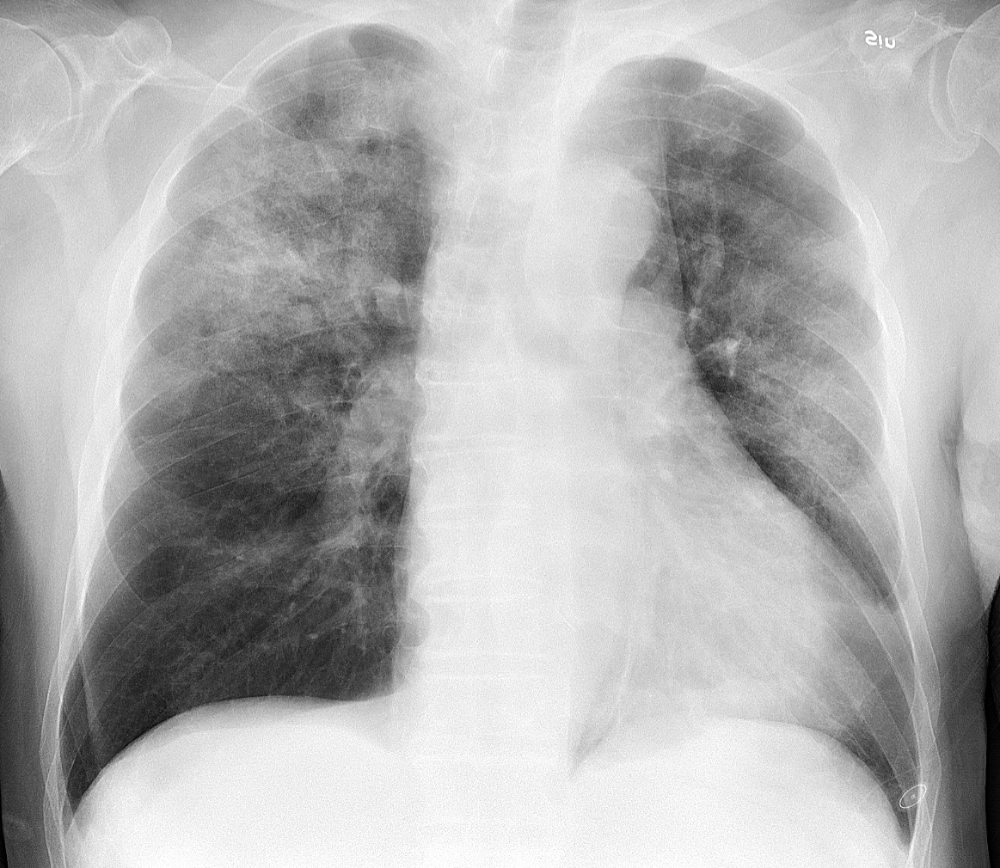

Ficha del catálogo
Neumonía
- Sistema
- Respiratorio
- Modalidad
- RX
- Región
- Tórax
- Dificultad
- Básico
Infección del parénquima pulmonar en la que los alvéolos se llenan de exudado inflamatorio. Al sustituirse el aire por líquido, la zona afectada deja de ser radiolúcida y aparece como una opacidad.
Técnica
Radiografía posteroanterior y lateral de tórax. La proyección lateral es muy útil para localizar el lóbulo afectado y para detectar consolidaciones ocultas tras el corazón o los diafragmas.
Qué observar
- Opacidad del espacio aéreo, de bordes mal definidos y distribución no segmentaria en la neumonía típica
- Broncograma aéreo: Bronquios visibles como ramificaciones negras dentro de la zona opaca, signo que confirma el origen alveolar
- Signo de la silueta: Si la opacidad borra el borde del corazón o del diafragma, la lesión está en contacto anatómico con esa estructura, lo que permite localizarla
- Ausencia de pérdida de volumen: A diferencia de la atelectasia, la neumonía no colapsa el pulmón
- Derrame pleural acompañante (paraneumónico)
- Cavitación dentro de la consolidación, que sugiere absceso
Hallazgos
Opacidad del espacio aéreo con broncograma aéreo en el parénquima pulmonar, compatible con proceso neumónico.
Perlas
El signo de la silueta es una de las herramientas más elegantes de la radiología de tórax: Si se borra el borde derecho del corazón, la lesión está en el lóbulo medio; si se borra el hemidiafragma, está en el lóbulo inferior. Permite localizar en tres dimensiones con una imagen plana.
Diagnóstico diferencial
- Atelectasia
- Se acompaña de pérdida de volumen con desplazamiento de cisuras, elevación diafragmática y arrastre del mediastino hacia el lado afectado, algo que la neumonía no produce.
- Edema pulmonar cardiogénico
- Es bilateral y de distribución perihiliar y simétrica, con líneas septales, cardiomegalia y derrame bilateral, y cambia con rapidez tras el tratamiento.
- Infarto pulmonar
- Se presenta como una opacidad periférica de base pleural y forma triangular, sin broncograma prominente y en el contexto de tromboembolia.
- Carcinoma con consolidación o neumonía obstructiva
- La opacidad persiste tras tratamiento adecuado, se asocia a atelectasia lobar y a una masa hiliar que obstruye el bronquio.
- Contusión pulmonar
- Aparece precozmente tras un traumatismo, no respeta límites segmentarios y mejora en pocos días, a diferencia de la neumonía.
- Neumonitis por aspiración
- Se localiza en los segmentos declives según la posición del paciente, con predominio en lóbulos inferiores y en el segmento posterior de los superiores.
Simuladores
- La sombra de la mama y del tejido blando de la pared crea una opacidad basal difusa que desaparece si se valora la proyección lateral y la nitidez de la trama vascular a través de ella.
- Una espiración incompleta amontona la trama en las bases y simula infiltrados, por lo que siempre debe comprobarse la inspiración antes de informar.
- La grasa mediastínica, la almohadilla grasa epicárdica y los pliegues cutáneos pueden simular consolidaciones paracardiacas.
- La superposición de estructuras óseas y de partes blandas del cuello sobre los vértices puede simular o esconder una condensación apical.
Por modalidad
- RX
- Confirma la sospecha clínica, localiza el lóbulo afectado, valora complicaciones y sirve para el control evolutivo con baja dosis.
- TC
- Detecta consolidaciones que la radiografía no muestra, define abscesos, empiema y necrosis, y revela causas subyacentes como una obstrucción bronquial.
- US
- Muy útil a pie de cama en el niño y en el paciente crítico: Identifica consolidación subpleural con broncograma y cuantifica el derrame para guiar su punción.
- RM
- Alternativa sin radiación en poblaciones seleccionadas como embarazadas y niños con estudios repetidos, aunque su uso rutinario es limitado.
Protocolo
Radiografía posteroanterior y lateral de tórax en bipedestación e inspiración profunda, con alta energía y tiempo corto. La proyección lateral es imprescindible porque descubre consolidaciones ocultas tras el corazón, en los lóbulos inferiores y en los senos costofrénicos posteriores. En el control evolutivo conviene repetir con la misma técnica para poder comparar, y no antes de que haya transcurrido tiempo suficiente, ya que la resolución radiológica va por detrás de la mejoría clínica. Cuando se realiza tomografía se emplean cortes finos, y el contraste intravenoso se añade si se sospecha empiema o absceso.
Clasificación
En la práctica se distinguen tres patrones radiológicos: La neumonía lobar, con consolidación del espacio aéreo y broncograma; la bronconeumonía, con opacidades parcheadas y peribronquiales multifocales; y la neumonía intersticial, con patrón reticular o en vidrio deslustrado. Para valorar la gravedad y decidir el destino del paciente se emplean escalas clínicas como CURB-65, que puntúa confusión, urea elevada, frecuencia respiratoria, presión arterial y edad de 65 años o más. Los derrames paraneumónicos se gradúan en simples, complicados y empiema según sus características, lo que determina si basta con antibiótico o se requiere drenaje.
Errores frecuentes
- Descartar neumonía por una radiografía normal en fases muy iniciales o en pacientes deshidratados o inmunodeprimidos.
- Repetir el control demasiado pronto y concluir que no hay respuesta, cuando la resolución radiológica tarda semanas.
- No informar el derrame acompañante ni sus características, que deciden si hace falta drenaje.
- No exigir la resolución completa en pacientes de riesgo, ya que una consolidación persistente puede esconder un tumor obstructivo.

neumonia consolidacion broncograma infeccion silueta torax alveolar